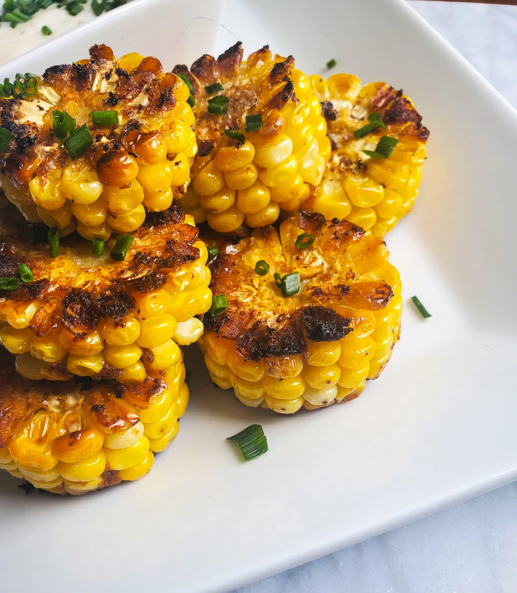

Corn Rings

Sweet Corn Rings
I love corn on the cob, but this fun little twist might be my new favorite way to make it more scrumptious.
Ingredients:
You will need the following ingredients to prepare;
- 0.25 cup unsalted butter.
- 0.5 teaspoon each, 'garlic, chili, and onion powder'.
- 0.5 teaspoon Cajun powder.
- 2 ears fresh corn, sliced into 6 equal-sized rings.
- Sea salt to taste.
- 2 teaspoon chopped fresh chives.
- 0.25 cup ranch dressing, or to taste.
Directions:
- Preheat the oven to 400 degrees F (200 degrees C).
- Combine butter, chili powder, garlic powder, onion powder, and Cajun seasoning in a microwave-safe dish and cook in the microwave until butter is fully melted, about 1 minute. Remove from microwave and stir.
- Use tongs to dip a corn ring intoo the spiced butter, making sure to coat it thoroughly in the spices. Transfer to a plate and continue until all of the rings have been dipped. There will be butter remaining.
- Heat an oven-safe skillet over medium heat. Once heated, place corn rings into the skillet, season them individually with sea salt, and let them sizzle away until a nice sear has developed, about 3 minutes. Flip and use a basting brush to brush remaining butter onto the seared sides of the rings. season again with salt and continue to cook for 2 more minutes.
- Transfer the skilllet into the preheated oven and cook for 10 minutes, carefuly flip the rings and cook for 5 more minutes.
- Remove from the oven and transfer to a serving platter. Sprinkle chives over top and serve with ranch dressing, along with corn skewers for picking up individual rings.